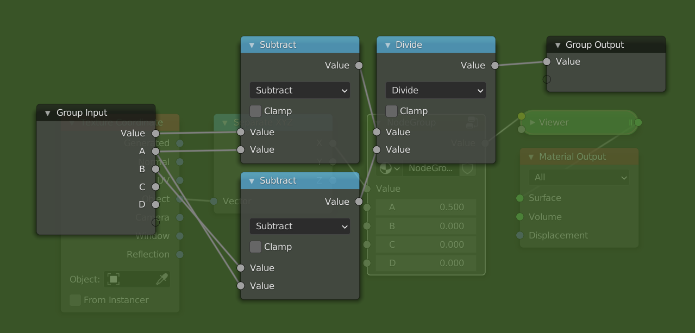
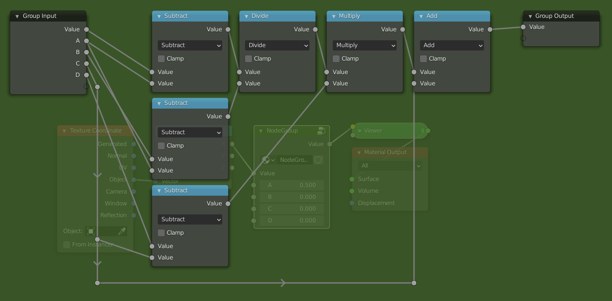

About this Book
The goal of this book is to be a resource for people learning about procedural shaders in blender. It is still a work in progress. I don't know everything, and will therefore not be able to cover everything. The shaders from this book are also not optimized, and serve only as a learning resource. I'm not the first person to write about shaders, so I highly recommend that you take a look at some other great sources as well. A list of these resources can be found here.
The book focuses on creating procedural shaders in blender, i.e. it is not a tutorial for blender itself. The early chapters are aimed at complete beginners, and serve as a replacement for my series on youtube: Math in the node editor. Here we will look at how we can manipulate coordinates to create all sorts of cool effects. Later chapters will be more advanced and cover more interesting topics such as vector displacement. There will also be a small chapter on python scripting. Each chapter will have examples where we create shaders using the things we learned.
Acknowledgement
This book was written using mdbook. It would not have been possible without the loving community of Rustaceans. The graphs are from the fantastic website graphtoy, by Inigo Quilez.
What is a shader
Although there are varying definitions for what a shader is, a simple way to think about them is as programs that are run on a Graphics Processing Unit (GPU). A GPU, unlike a Central Processing Unit (CPU), is built to do a single operation many times in parallel very quickly. These operations can range from things like adding two numbers to calculating the sine of a value. This makes a GPU a very powerful tool when dealing with images, because images are made up of a large number of pixels that would take a long time to edit one at a time. The shaders that we will be looking at in this book are all so-called fragment shaders. Other types of shaders are vertex shaders, compute shaders and geometry shaders.
Fragment shaders
In the whole process of converting 3D data to a 2D image, the fragment shader or pixel shader is one of the last steps. Simply put, it's goal is to assign a color to a pixel. It takes as input a fragment (i.e. a collection of values like coordinates which were calculated in a previous step) as wel as some uniform variables. Uniform variables are external variables like the current time or the height and width of the image. Uniform values are the same for every pixel (thats where the name uniform comes from). Per fragment the shader outputs a pixel color. It is possible that multiple fragments end up in the same pixel, e.g think of semi-transparent objects. After the fragment shader is done, some post-processing may be applied before the final image.
What you need to know for blender
When we make a shader in the node editor, you have to remember that everything we do is calculated at least once per pixel. When the shader is compiled it is passed to the processors in the GPU. These processors are independent (i.e. they do not know the values of the other processors) and forget what they computed in the previous step. In blenders node editor there is also no control flow, this means that common things from programming languages like if-statements and loops are not available. Increasing the number of samples means that the compiled shader is run multiple times, each time with a small random offset. These samples are then combined to create a smooth output image.
Shaders and Textures
The goal of this book is to build shaders with blenders node editor. Almost all shaders use a Texture node or a Shader node at some point. The good news is that we can already build a whole range of shaders using only a few of these nodes. We will now cover some of the more common Texture and Shader nodes, and go into more uses in later chapters. If you want to find more information about any node, it is always a good idea to look at the blender documentation.
Shaders
When you create a new material, the default node tree has two nodes. One of these is the Material Output node which is the final output of the shader. The other is the Principled BSDF which is a very powerful all-in-one shader. By just changing the values of the Principled BSDF, you can get the basic look of most materials. This is the basis for most node trees, where textures are plugged into the sockets of the Principled BSDF to vary the material properties over the surface. On common way to use it, is to combine texture maps (think of diffuse map, roughness map, normal map, etc.) into one material. There is even a very easy way to do this if you have the node wrangler add-on enabled. Just press CTRL + SHIFT + T on the Principled BSDF, and select the maps you need. This book is for procedural shaders, however, so we won't be using image textures.
Other than the Principled BSDF, the most common surface shader nodes are the Emission shader and the Glass BSDF (Although you can technically use the Principled BSDFfor these as well). The Emission shader is particularly interesting, because it does not interact with other rays in the scene, which makes it very easy to compute. For this reason the Emission shader is often used to preview the node tree at some point. With node wrangler, you can preview a node by pressing SHIFT + CTRL + LMB on that node. The Glass BSDF is used when creating glass like objects, but this does not come up very often when creating procedural shaders.
Textures
The two most common Textures Nodes are the Noise Texture, and the Voronoi Texture. The Noise Texture generates smooth variations which are layered on top of each other with different scales and amplitudes to create fractal noise. The amount of layers can be controlled with the Detail socket, with 0 being one smooth layer. The Noise Texture can be used to create natural looking surface variations and imperfections. To control the output of the texture, we can use the Map Range node, a node that we will cover in detail in later chapters. The Voronoi Texture creates cells which are very useful for shaders, where you need to distribute some things randomly over a surface. This can be things like cracks in ice or pebbles on the ground.


The image on the left is a Noise Texture, and the image on the right is a Voronoi Texture.
Example
A car paint like material with varying roughness to mimic fingerprints. The Map Range node is used to increase the contrast in the texture, and limit the roughness to a range of [0.05, 0.2]. In practice the maximum roughness should be lower to create a more subtle effect. The idea is that you should only notice the imperfections if you remove them, but this way it's clearly visible on the final image. You can see the output of the Map Range node in the second image.

Your journey begins
In this chapter we will learn how to use math to create shaders. Before we begin I will share my setup for creating shaders in blender. In the beginning these shaders will all be 2D, and we will therefore use a plane as our primitive. If you already have your own setup that you're comfortable with, you can jump right to the next section.
Setup
Make sure that you have the node wrangler add-on enabled (it is a built-in plugin).
Layout
Starting from the default blend file open up the shading workspace. Then edit edit the layout so that the file explorer, render preview, and image editor are gone. It should look something like this:

Next change the outliner to the 3D viewport and replace the default cube with a plane. Make sure the default material is assigned to the plane. Then switch the view to top orthographic and turn off all overlays and gizmos. Turn switch the display to rendered. We will use this section as our shader preview. You can resize it to be bigger if you want. The final result should look something like this:

If you want this to be the default every time you open blender you can go to "File > Defaults > Save startup file". Optionally you can also start with my default file.
Sockets
When working with nodes, it is very important to keep in mind that the data that gets passed through the network can be of different types. The types used in the shader editor are: value, color, vector, and shader. The node sockets indicate the type of value the node expects as input and the type it outputs. You can easily see the type by looking at the color of the socket
- Values are indicated with greyish sockets
- Colors are indicated with yellowish sockets
- Vectors are indicated with blue/purplish sockets
- Shaders are indicated with greenish sockets
You can see the different types of sockets here:

Different types
As long as we plug data of the same type into sockets of the right type, everything works fine. What happens when we connect two sockets of different types? Most of the time this will work, even though it might not do what you think it will. The only time it doesn't work is when you try to connect a shader socket with any other non-shader socket. In that case the connection will be made red, and the shader won't compile. If you want to convert a shader to a color you have to use the Shader to RGB node which only works in EEVEE. You can see the different possibilities here:

So what happens when it does work? The answer depends on the types of the sockets. The following descriptions may not be one hundred percent accurate, but they do suffice for things that we need them for.
Color socket
The data stored in a color socket is made up of three values stored together as (r, g, b). These are the red, green, and blue values of the color. Here are the possibilities for implicit conversion:
- Color -> Shader. The color output gets treated as an emission shader with strength one.
- Color -> Vector. The
(r, g, b)gets sent to(x, y, z). - Color -> Value. The returned value is the luminance:
0.2126729*r + 0.7151522*g + 0.0721750*b. This is the same as theColor to BWnode, and leaves grayscale values unchanged.
Vector socket
The data stored in a vector socket is the same as the data stored in a color socket, except that the labels are now (x, y, z). These are the conversions:
- Vector -> Shader. Same as Vector -> Color -> Shader.
- Vector -> Color. The
(x, y, z)gets mapped to(r, g, b). - Vector -> Value. The average is taken, i.e. \(\frac{1}{3}(x+y+z)\). Note that this is different from the conversion Color -> Value.
Value socket
This just stores one value, hence the name.
- Value -> Shader. The output gets treated as an emission shader with color
(1.0, 1.0, 1.0)(white) and strength the value. - Value -> Color. The red, green, and blue channels are set to the value.
- Value -> Vector. The x, y and z components are set to the value.
Summary
Converting between Color and Vector does nothing. Converting from Value to Vector or Color makes three copies of the value. Converting from Color to Value takes the luminance, and converting from Vector to Value takes the average. In this case information is lost, i.e. Vector -> Value -> Vector will not necessarily be the same as the original vector. Converting to Shader is done through an Emission Shader.
Separate and Combine
If you don't want to lose information because of implicit conversions, you can use the Separate XYZ node and the Separate RGB node to extract the individual components. If you then want to combine them later in the node tree you can use the Combine XYZ and Combine RGB nodes.
Blender documentation
You can find more info here.
Source code
The information for how the conversion works, is based on the following snippets in the blender source.
intern\cycles\render\graph.cpp
if (from->type() != to->type()) {
/* can't do automatic conversion from closure */
if (from->type() == SocketType::CLOSURE) {
fprintf(stderr,
"Cycles shader graph connect: can only connect closure to closure "
"(%s.%s to %s.%s).\n",
from->parent->name.c_str(),
from->name().c_str(),
to->parent->name.c_str(),
to->name().c_str());
return;
}
/* add automatic conversion node in case of type mismatch */
ShaderNode *convert;
ShaderInput *convert_in;
if (to->type() == SocketType::CLOSURE) {
EmissionNode *emission = create_node<EmissionNode>();
emission->set_color(make_float3(1.0f, 1.0f, 1.0f));
emission->set_strength(1.0f);
convert = add(emission);
/* Connect float inputs to Strength to save an additional Falue->Color conversion. */
if (from->type() == SocketType::FLOAT) {
convert_in = convert->input("Strength");
}
else {
convert_in = convert->input("Color");
}
}
else {
convert = add(create_node<ConvertNode>(from->type(), to->type(), true));
convert_in = convert->inputs[0];
}
connect(from, convert_in);
connect(convert->outputs[0], to);
}
else {
/* types match, just connect */
to->link = from;
from->links.push_back(to);
}
intern\render\cycles\nodes.cpp in the function ConvertNode::constant_fold.
if (from == SocketType::FLOAT) {
if (SocketType::is_float3(to)) {
folder.make_constant(make_float3(value_float, value_float, value_float));
}
}
else if (SocketType::is_float3(from)) {
if (to == SocketType::FLOAT) {
if (from == SocketType::COLOR) {
/* color to float */
float val = folder.scene->shader_manager->linear_rgb_to_gray(value_color);
folder.make_constant(val);
}
else {
/* vector/point/normal to float */
folder.make_constant(average(value_vector));
}
}
else if (SocketType::is_float3(to)) {
folder.make_constant(value_color);
}
}
intern\cycles\render\shader.cpp
rgb_to_y = make_float3(0.2126729f, 0.7151522f, 0.0721750f);
float ShaderManager::linear_rgb_to_gray(float3 c)
{
return dot(c, rgb_to_y);
}
The basics of the math node
We will start from this node tree:

We will go into more detail on coordinates in a later chapter, for now all you need to know is that the object coordinates are centered at the object origin, and go from -1 to 1 in all three axes in this case. The Separate XYZ node allows us to only look at one axis at a time, in this case the x-axis. The viewer node is just a renamed Emission Shader node.
Thinking in terms of ranges
The current output shows black in the left half and grey values going to white in the right half. This is one way to describe the output, but from this it is not so clear what the actual output values are. A better way to think about the output image is as a linear gradient from -1 to 1. The range of the gradient is [-1, 1] in this case. What this means is that the pixel value as you move from one side to the other changes from -1 to 1. The change here is along the x axis and goes from left to right (from lower values to bigger values). Because values below 0 are displayed as black, the left half of the image is black. If the gradient was along the y-axis then it would be going from the bottom to the top.
In addition to the range of values, we can also talk about the shape of the gradient. In this case the shape is linear, because when we plot the value of each pixel as we move from left to right the plotted shape is a line:

The most common shape is a linear gradient.
The math node
Now that we have learned about gradients and ranges, it is time to manipulate them. In this section we will look at the most basic operations: Add, Subtract, Multiply and Divide. What happens when we add a Math node in between the Separate XYZ node and the viewer node? The values that go into the viewer node will now first pass through the Math node. The Math node will apply an operation to the values that are passed in, and return a new value. By default the Math node is set to Add, and both values set to 0.5. The Add, Subtract, Multiply and Divide modes only affect the range and not the shape.

Add and Subtract
Currently the range is [-1, 1] . When it passes through the math node 0.5 is added to every value in the range. Luckily we don't need to think about what happens to every value in the range. We only need to look at the the two endpoints, i.e -1 and 1. Because we add 0.5 to everything, the range changes from [-1, 1] to [-0.5, 1.5] . You can think of this as moving the line 0.5 units upwards or moving the gradient 0.5 units to the left, whichever is more intuitive for you.
If we now change the value of the Add node, the range will move left or right. Increasing the value of the second input means we make the values in the range bigger, causing them to move to the right on the number line. This means, however, that the darker values will move to the left in the range, and because of that we perceive it as moving the image to the left. If we instead add negative values the result is the complete opposite.
A good way to see this, is to think about the middle value or center of the range. The center of a range represents its position. We can calculate the center of the range [a, b] as
\[\frac{a+b}{2}\]
If the range is [-1, 1] then the center is at 0. When we add 0.5 the new range is [-0.5, 1.5] and the center is now at 0.5. The old center, 0, is no longer in the center of the range but has moved to the left in the range, i.e. the old center is to the left of the new center. We will therefore see it as moving to the left. If we subtract values by changing the mode to Subtract or by adding negative values, the range will move to the left and the old center will move to the right of the new center.
In conclusion, the Add mode allows us to reposition a range. This is sometimes referred to as translation. If we want to move things to the left we add positive numbers, and if we want to move things to the right we add negative numbers.
Multiply and Divide
We have now seen how to position a range. If this was the only thing we could do with ranges we would be very limited. Luckily the Multiply mode allows us to scale the range. To see how this works let's look at an example once again.

The input range is [-1, 1] , and we multiply everything by 0.5. This means that the new range is now [-0.5, 0.5] . The center of the old range was 0, and that of the new range is still 0. Therefore the position has not changed. What has changed however is the (signed) length of the range, which we can calculate as follows:
\[ b-a \]
The length of the range [-1, 1] is 2, while the length of the new range, [-0.5, 0.5] , is 1. This is exactly \(0.5*2\), so the length of the old range multiplied by the value in the we gave as input. The length of the range has decreased, which we perceive visually as zooming in. If we were to multiply by a value greater than 1, say 2, then the length would increase giving the effect of zooming out. In addition to increasing or decreasing the length of the range, we can also think of multiplying as darkening or brightening an image. If we multiply by a value less than 1, the values get darker. If we multiply by a value greater than 1 the values get brighter.
What happens if you multiply by a negative number? Let's say we multiply the range [-1, 1] with -1, then the new range is [1, -1] . We have flipped the range! This range has a signed length of -2, this means that instead of increasing from left to right, it now goes from right to left. Visually we perceive this as mirroring the range.
Summary
To move, translate or reposition a range we can use the Add or Subtract mode. To resize, scale or flip a range we can use the Multiply or Divide mode.
Example: map range node from scratch
To put our newly learned skills to the test we will recreate the map range node from scratch. The map range node is a very useful node that lets you go from one range to another, by specifying the endpoints. If we wanted to convert the range [-1, 1] to [0.5, 2] we would use these settings:

Steps needed
To convert from one range [a, b] to the other [c, d] we will use the following steps:
- Subtract
afrom the range. This will convert it to the range[0, b-a]. - Make the input range have length 1 by dividing by its length \((b-a)\). The new range is now
[0, 1]. In many cases when working with ranges, you want to work with a range from 0 to 1, or[-1, 1]. The reasons for this will become clear when we start changing the shape. - Resize the range to the length of the output range by multiplying by \(d-c\). The range is now
[0, d-c]. It already has the correct length. - We position the range so that the endpoints match, by adding
c. The new range is now[c, d]. This is the result we wanted.
For the more mathematically inclined, the full formula looks like this: \[ \frac{x-a}{b-a}(d-c) + c \] where \(x\) is the input range.
The node setup
Add a math node between the separate xyz and the viewer node. Select it and press Ctrl + G to make it into a node group. Open up the side panel by pressing N to add extra inputs to the node group. Make sure you have 5 inputs then rename them to something by which you can recognize them.

We will now follow the steps from above but using math nodes. If I refer to socket names, they are the same as in the picture. Notice how the computations with ranges we described earlier are easily translated to operations with the math node.
- Change the mode of the math node to "Subtract", and connect the
Asocket with the second input of theSubtractnode. - Add a
Dividenode between theSubtractnode and the group output. Copy theSubtractnode (Shift + D), and connect theBsocket to the second input and theAsocket to the first input. (This node will thus compute B - A. Then plug the result of thisSubtractnode into the second input of theDividenode.

- Add a
Multiplynode after theDividenode, and aSubtractnode below the otherSubtractnodes. Plug theCsocket into the second input of theSubtractnode and theDsocket into the first input. Then plug the result of that into the second input of theMultiplynode. - Now just add an
Addnode after theMultiplynode and plug theCsocket into the second input.
It is also be possible to use the Multiply Add node to combine the last two steps into one node. The way we did it makes the correspondence clearer between the steps we set at the beginning, and is thus preferable for educational purposes.

Final example
Here is a simple example where we used the map range node group to change the range of a noise texture:

Shape
We have just learned how to transform a range using the Math node. Now it is time to also change the shape, for which we will be using the Math node as well. The functions that we will be looking at are Power, Sine, Smoothstep and Smootherstep.
Power
The Power mode of the math node is a powerful tool that allows us to change the shape or interpolation of a gradient. The mathematical operation is \(a^b\), as is also shown in the tooltip. There are two ways to use this:
- We let
abe constant, and plug the range into thebsocket. This gives us an exponential function with basea. If we choseato be 2, for example, then we would get the function \(2^x\). The exponential function is not so useful when changing the shape, but comes up a lot in mathematical formulas. - In the other case we make
bconstant and plug the range into theasocket. In this case we are raising the range to theb-th power. This is something that we will use a lot in the future. We will refer to it as the power function from now on.
The two functions look like this:
The constant value is animated through time between 0 and 10 by a sine wave, an incredibly useful function that we will cover soon. Feel free to experiment by changing the values of the functions.
Here are some observations we can make from the graph
- The functions seem to flip at a certain threshold, to be exact at a value of 1.
- The power function is only shown on the right hand side (the positive x axis).
- The power function always passes through the points
(0,0)and(1,1), and is constantly rising (i.e. as you move from right to left the values increase). - The exponential function always passes through
(0,1).
The third property is the most important one. Another way to formulate it is as follows: "If you plug a [0, 1] range in the power function, you get back a [0, 1] range, but with a different shape". This property is also true for the other functions that we will be looking at. If we look at the shape of the curve, we can see that it is not flat at the points (0,0)and (1,1). This means that we might get sharp transitions when combining this function with others. The following three functions fix this problem.
Sine, Smooth and Smoother
We will limit ourselves to the range [0, 1] for these functions, as this makes things considerably easier. At the end of the section we will see how we can overcome this limitation.
Derivatives
To make a function that is flat at the edges, we first have to define what it means for a function to be flat. Intuitively a function can be considered flat at a point, if we can balance a book on the graph of the function. A more mathematical way would be to say that the function has a slope or derivative of zero at that point. Intuitively the slope says by how much a function is rising at that point. If the slope is negative, the function is decreasing, and if the slope is positive it is increasing. When the slope is 0, it is neither increasing nor decreasing and thus flat. The following image illustrates the different concepts we just talked about.
What follows is a bit more of a technical explanation, so feel free to skip over it and go straight to the summary.
Construction of the functions
The simplest kinds of functions are the polynomials, they form the building blocks for more complex functions. Not only are they simple to write down, they can also be evaluated very quickly, making them ideal for computer graphics. Another useful property of polynomials is that through \(n+1\) distinct points, there is a unique polynomial of degree \(n\), a more general formulation of the well known property that two points determine a line. So what degree polynomial do we need to get a function that satisfies the properties we want? The properties are:
- Goes through
(0,0)and(1,1) - It is flat at
(0,0)and(1,1)
These are four conditions, meaning that we have a unique polynomial of degree 3 which satisfies these properties. This polynomial, commonly known as Smoothstep, looks like this
 \[
-2x^3+3x^2 = x\cdot x\cdot (3-2\cdot x)
\]
The right hand side of the equation is the one used in computer graphics, because it requires less computational steps to evaluate than the one on the left. Anyone who has had an introduction to calculus should be able to verify that this function does indeed meet the constraints. This function satisfies the properties we have described, but is not "smooth" enough in some cases. To fix this we use the so-called
\[
-2x^3+3x^2 = x\cdot x\cdot (3-2\cdot x)
\]
The right hand side of the equation is the one used in computer graphics, because it requires less computational steps to evaluate than the one on the left. Anyone who has had an introduction to calculus should be able to verify that this function does indeed meet the constraints. This function satisfies the properties we have described, but is not "smooth" enough in some cases. To fix this we use the so-called Smootherstep, which adds two extra conditions.
- Goes through
(0,0)and(1,1) - It is flat at
(0,0)and(1,1) - The second derivative (the derivative of the derivative) is flat at
(0,0)and(1,1)
The new conditions ensure that the boundaries are very flat. Because we have 6 conditions, we now need a degree 5 polynomial.
 \[
6x^5-15x^4+10x^3 = x\cdot x\cdot x\cdot (x\cdot (x\cdot 6-15)+10)
\]
\[
6x^5-15x^4+10x^3 = x\cdot x\cdot x\cdot (x\cdot (x\cdot 6-15)+10)
\]
What if we don't want to use polynomials? In that case, good candidates are the trigonometric functions like Sine, Cosine and Tangent. The problem here is that they are more expensive to evaluate, and less suited for the task. Another reason, is that they are approximated very well by polynomials. In fact any continuous function on a closed interval can be approximated as closely as desired by polynomials. This result is known as the Stone-Weierstrass theorem. This means that we are finding more complex polynomials to solve the same problems. If we do want to use Sine, we have to do some transforms on ranges to get it to line up. We will go into more detail on the Sine function when we talk about repetitions.
The value of Sine, goes from -1 to 1 as the input goes from \(-\pi/2\) to \(\pi/2\). Luckily for us it's already flat at the edges. Our goal is to make it go from 0 to 1 as the input goes from 0 to 1. To do this, we can use similar steps to the ones we used for the Map Range node. To go from [-1,1] to [0,1], we simply add 1 and divide by 2. For the input we multiply \(x\) by \(\pi\) and add \(-\pi/2\). The final function looks like this:
\[
\frac{\sin(\pi x - \pi /2)+1}{2}
\]
Different ranges
To make the functions work on ranges other than [0,1] we can use the steps we used to create the Map Range node from scratch, with one new step in the middle. Like before, we have an input and an output range, e.g. [a,b] and [c,d].
- First remap the range to
[0,1]by subtractingaand dividing byb-a. - At this point it is possible that the values exceed the
[0,1]range, if the actual input exceeded the[a,b]range. To fix this weClampthe input between 0 and 1, i.e. values less than 0 go to 0, and values greater than 1 go to 1. Now we apply the function to the clamped range. - We can now remap the range (with a changed shape) from
[0,1]to[c,d], by multiplying byd-cand addingc.
The updated node group looks like this:

Making the Smoothstep node group is left as an exercise. This now has basically the same functionality as the actual Map Range node.
Summary
Here is a plot of all the functions we looked at.
Repetition
It is very often the case that some pattern appears multiple times on the same material. Think of things like floor tiles, honeycombs, fabrics etc. In this case it is useful to be able to work on one instance of the pattern, and then have it repeat multiple times automatically. The way that we can do this in shaders is by manipulating the input ranges of our pattern to repeat themselves. We can then add some imperfections on top to break up the pattern. Once we move to more dimensions we will see that this is a very powerful tool for creating all sorts of procedural shaders.
Creating a repetition
The easiest way to create a repeating range is to use the Fract mode of the Math node. It takes the decimal or fractional part of a number and discards the rest. This means that 0.7 gets sent to 0.7 but 1.24 gets sent to 0.24. Let's take a look at what happens when we plug the range [0, 2] in. The values less than 1 will stay the same, for the other values the "1" in front will be removed, and we'll get a duplicate of the range [0,1]. Like this we have created a repetition of the range [0,1]. The Fract mode is a specific case of the more general Modulo operation.
The Modulo operation takes in an additional argument, the point at which we want to start wrapping. For Fract we start wrapping at one, i.e. once we have more than just a decimal part. If we instead start wrapping at two, for example, then the range [0,2] stays unchanged, except for the point 2, which wraps back to 0. The range [0,4] gets sent to two copies of the range [0,2]. Experiment with the graphs to get a better feel for how it works.
Another function that we can use is the Sine function. We already encountered it in the previous section. It also repeats ranges, but in a smooth way. Unlike the Modulo operation, the shape of the range gets changed by the Sine function. It also differs in the fact that it wraps at \(2\pi\), the circumference of a unit circle. This is no coincidence, because the Sine function can be seen as the height of a point that is moving around a circle. Once the point has completed a full journey around the circle, the pattern repeats.
Magic?
With the functions described above, we can easily create a repetition where a change to one of the copies is repeated across all other copies. You can easily test this yourself in blender. Start from the following node group and try changing the nodes that come afterwards. You will see that the pattern changes in all copies!
As an exercise you can try to change the nodes so that the repetition uses the Sine function instead. Hint: you will need to remap the range to [0, 2*pi] before using the Sine function, if you want the number of repetitions to be correct.
Graphs
Accessing individual elements in a repetition
So what if we want to break up the pattern? If we add some noise after the repetition, it doesn't break up the pattern because the noise will be repeated too. If we add it before the repetition, then the pattern will be distorted. We need to split the range into two parts: the repeated pattern, and the variation for each copy. We have already tackled the repetition, we will now handle the variation. For this we will use the Floor mode.
While the Fract mode takes the fractional part, the Floor mode takes the whole number part. (For negative numbers this is not entirely true, but that doesn't really matter for what we will use it for). The graph of the Floor function looks like a staircase. The Fract and the Floor mode also have a very nice mathematical relationship: fract(x) + floor(x) = x. This is because the Floor function tells us in which copy we are, while the Fract function tells us where in the copy we are. The combined information says exactly where we are. The Floor function has only one value per copy. This means that any noise that use after the Floor function will have the same value on one copy, but different values for each copy.
Example: 1D noise
These explanations are all nice and well, but let's have a look at how we can actually use them. If we want a random value per pixel, we can use the White Noise Texture node. More often than not, we instead want a smooth kind of noise. For this we can use the Noise Texture. We will now see how you can use the White Noise texture to make the Noise Texture in the one-dimensional case.
Repetition
Because we are in search of "smooth" noise, we don't want a random value per pixel. Instead, we want to have control over the spacing of the random values. We will then interpolate between the different values to create a smooth transition. The first node tree looks like this:

It just gives us a random value per cell/copy of the input range. This works because the Floor function is constant over each copy, and thus the random value from the White Noise Texture is also constant for each copy.
Interpolation
To interpolate between two values, we first need two values. Currently we only have one value, i.e. the one generated by the white noise texture. For the second value we will use the random value of the copy to the right. To access this value we can just shift the input range by 1, because the ranges are wrapped at 1. You can verify for yourself that this works by comparing the outputs of the two White Noise Texture nodes.

The interpolation itself is easy now. We just need to add a Map Range node. For the Value socket we can plug in the ranges generated by the Fract node. Since these go from 0 to 1 we can leave the From min and From max sockets unchanged. For the To min socket we can use the first randomly generated value, and for the To max socket we can use the value of the copy to the right. This will make it so that the values transition from the value of this copy to the value of the right copy as we move from left to right. As a final step we can set the interpolation mode to "Smootherstep" to get a smooth shape as a result.
Layers
The observant among you may have noticed that the Noise Texture node has more options than just Scale. This is because it uses Fractal Brownian Motion. Multiple copies of the node group that we have just made are added on top each other with decreasing scales. The Detail socket controls how many layers. The Roughness socket determines by how much we scale down the consequent layers, so that the smaller details will contribute less to the final result. Although we can add layers manually by copying our node groups, there is currently no way to procedurally control how many layers we have. For that reason we will not implement this aspect of the Noise Texture node in our version.
Resources
If you are interested in learning more about shaders, these resources might be what you're looking for.
Blender specific resources
- The blender documentation on shader nodes gives a description of each node and contains some examples as well.
- The very nice community of the erindale.xyz discord server, focused on procedural things in blender.
Shader resources
- The book of shaders is a great resources for learning shaders using WebGL.
- A whole lot of articles on computer graphics by Inigo Quilez.
- The Art of Code youtube channel has very good tutorials for writing shaders with Shadertoy.